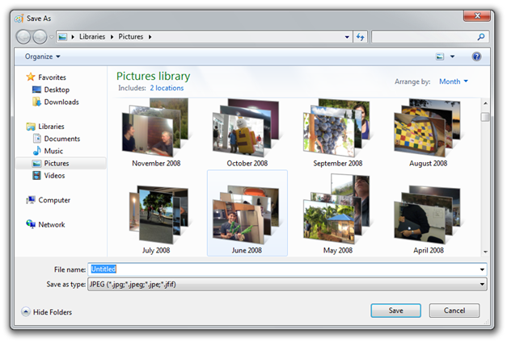

This topic describes some of the things to consider when using libraries in your program.
In this topic:
Libraries enable users to organize their file-based content in a way that is meaningful to them and not limited by the organization of the file system. When your program supports libraries, it allows the user to find their content in a way that makes sense to them while presenting a user interface that is consistent with the Windows 7 user experience. Libraries also make it easier for your program to locate file-based content that is stored in different folders or on different machines.
The topics in this section describe how you can add library support to your program and take advantage of the new capabilities that libraries offer. Windows 7 provides some of this support by default. If your program does not modify the common file dialog boxes that it currently uses, it might require very little additional programming to support libraries.
This section describes some of the key features that libraries provide and how to support them in your program. With this information, you can decide which features will provide the best user experience from your program. If your program customizes the common file dialog boxes, the information in this section can help you determine how to use the new common file dialog boxes to use libraries and provide equivalent functionality in Windows 7.
The Windows Shell programming model describes how a program interacts with Windows Shell programming objects. While file-system objects, such as files and directories, are represented by Windows Shell objects, not all Windows Shell objects are represented by the file-system. Libraries, for example, are Windows Shell objects that do not have a file-system equivalent. Using Windows Shell objects in your program enables your program to access all Shell objects and not just file-system objects.
For the best results, your program would use the Shell Library API to interact with libraries and access their contents. While libraries contain file-system items such as folders and files, libraries are not file-system items. As such, file-system APIs cannot be used to access library features or library contents.
If you have an existing program that currently uses many file-system APIs, your program can still take advantage of library features. The Shell Library API can provide file-system references to the items that are found in a library and these file-system references, such as the file name and path, can be passed to the existing file-system APIs that are in your existing program.
Before Windows 7 it was common to use a known folder, such as the My Documents folder, as the default folder in file save or file open operations. In Windows 7, the corresponding library should be used so the user will have the same experience in your program as they would with other Windows 7 programs, such as the Windows Explorer.
If you are currently using the Windows Shell API in your program, adding library support is straightforward. For example, if you currently call the SHGetKnownFolderItem function to get the location of the My Documents folder, you can replace the KNOWNFOLDERID value of the My Documents known folder with the KNOWNFOLDERID value of the corresponding library.
The following table shows the relationship between the KNOWNFOLDERID values of known folders and the KNOWNFOLDERID value of the corresponding library in Windows 7.
| Known Folder KNOWNFOLDERID values | Library KNOWNFOLDERID values |
|---|---|
| FOLDERID_Documents | FOLDERID_DocumentsLibrary |
| FOLDERID_Pictures | FOLDERID_PicturesLibrary |
| FOLDERID_Music | FOLDERID_MusicLibrary |
| FOLDERID_RecordedTV | FOLDERID_RecordedTVLibrary |
Â
Adding library support to your program will enable support for shared libraries in a HomeGroup. The HomeGroup is identified by its KNOWNFOLDERID value of FOLDERID_HomeGroup. Your program can find identify the user's private or shared default save location by setting the DEFAULTSAVEFOLDERTYPE value in the call to IShellLibrary::GetDefaultSaveFolder method.
Using a common file dialog box with libraries The common file dialog box has been updated to support libraries in Windows 7. The following illustration shows how the common file dialog box appears to a user in Windows 7.

In Windows 7, if your program currently displays a common file dialog box and does not change the dialog box template or hook any of its events, it will display the new Windows 7 version of the dialog box automatically. Specifically, in the call to the common file dialog box function, the lpfnHook, hInstance, lpTemplatename members of the OPENFILENAME structure must be NULL and the OFN_ENABLEHOOK and OFN_ENABLETEMPLATE flags must be clear.
In Windows 7, the IFileDialog-related interfaces replace the common file dialog box functions that were used in earlier versions of Windows. The earlier common file dialog box functions are still supported in Windows 7 but they do not provide the complete Windows 7 user experience and they do not support libraries. Some of the new features supported by the IFileDialog-related interfaces include:
You should use the IFileDialog-related interfaces when:
For more information on the IFileDialog-related interfaces, see:
If your program allows the user to select a folder, such as for import or export functions, in Windows 7, it should allow the user to select a library as well. The IFileOpenDialog interface and SHBrowseForFolder function allow the user to select a library when prompted to select a folder. The IFileOpenDialog interface is preferred over the SHBrowseForFolder function because IFileOpenDialog supports the Windows 7 user interface.
To allow users to select folders when using the IFileOpenDialog interface, call SetOptions with the FOS_PICKFOLDERS flag set and make sure the FOS_FORCEFILESYSTEM flag is clear.
FILEOPENDIALOGOPTIONS fileOptions;
hr = fileOpenDialogBox->GetOptions(&fileOptions);
fileOptions = fileOptions | FOS_PICKFOLDERS | ~FOS_FORCEFILESYSTEM;
hr = fileOpenDialogBox->SetOptions(fileOptions);
To allow users to select folders when calling the SHBrowseForFolder function, in the ulFlags member of the BROWSEINFO structure, set the BIF_USENEWUI flag and clear the BIF_RETURNONLYFSDIRS flag.
BROWSEINFO browseInfo;
browseInfo.ulFlags = BIF_USENEWUI | ~BIF_RETURNONLYFSDIRS;
// Set other member values
pidl = SHBrowseForFolder(&browseInfo);
To access the contents of a library, you must use the Windows Shell API. Functions of the file-system API cannot be used to access library contents because libraries are not file-system objects. If your program uses a custom file browser that is based on the file-system API, it will not be able to browse libraries or access library content.
This section describes how you can access library content so that you can select the best way to update your program to work with libraries.
The easiest way for a program to access library content is to use the Shell Library API. If you are working on a program that uses the file-system API, the Shell Library API can return the file-system folders of a library, which minimizes the change to your existing program code.
IShellLibrary *picturesLibrary;
hr = SHLoadLibraryFromKnownFolder(FOLDERID_PicturesLibrary,
STGM_READ,
IID_PPV_ARGS(&picturesLibrary));
// picturesLibrary now points to the user's picture library
IShellItemArray *pictureFolders;
hr = pslLibrary->GetFolders(LFF_FORCEFILESYSTEM, IID_PPV_ARGS(&pictureFolders));
// pictureFolders now contains an array of Shell items that
// represent the folders found in the user's pictures library
Because the library objects are part of the Shell programming model, they can be used with other Windows Shell APIs. For example you can use the IShellItem and IShellFolder interfaces in your program, along with related helper functions, to access the contents of a library in the same way as you would enumerate folders and folder contents to access content with the file system APIs.
The Windows Shell APIs support two enumeration modes to access the contents of a library:
Browse enumeration
Browse enumeration is the default enumeration mode and enumerates the contents of a library folder. Clear the SHCONTF_NAVIGATION_ENUM flag to use this mode.
Navigation enumeration
Navigation enumeration enumerates the library folders. Set the SHCONTF_NAVIGATION_ENUM flag to use this mode.
If your program uses a custom tree control to navigate the user's folders, enumerating the folders in the navigation enumeration mode will give you a list of a library's folders that is consistent with how the Windows Explorer enumerates folders in Windows 7.
For examples of how to uses these features in a program, see the ShellStorage sample in the Windows SDK.
Your program can save user content to a library as well as to a folder in the library. Likewise, the user can save to a specific folder in a library or they can just save to the library.
Every library has a folder that is designated as the default save location. The default save location is defined when the library is created; however the user can reassign the default save location to be any folder in the library. While the user does not need to configure a default save location, they have the option to change it. If the user deletes the folder that is currently set as the default save location, the library will automatically configure the next folder in the library to be the default save location.
There are several ways you can save user content to a library.
Shell API
If you are using the Shell programming model and save a Shell item, as represented by an IShellItem, IStorage, or IStream, to a library object, the Shell item will be automatically stored in the default save location of the library.
File-system API
If you have an existing program that uses many file-system API calls, you can get a path to the folder that is defined as the library's default save location. The folder path can then be passed to a file-system API.
For examples of how to uses these features in a program, see the ShellStorage sample in the Windows SDK.
If your program supports drag-and-drop actions, those should be updated to support the correct library interaction. If a file is dropped into a library, the dropped file should be saved in the default save location. If a folder is dropped into a library, the dropped folder should be added as a new folder to the library. If a file is dropped into an existing folder that is not the default save location, the file should be added to the selected folder.
For examples of how to add library support for your programs drag-and-drop functionality, see the ShellLibraryCommandLine sample in the Windows SDK.
This topic describes how a program can keep its view of a library's content up-to-date.
Because the user can modify the folders of a library interactively when your program is not running, your program should call SHResolveLibrary when it starts to discover and store any changes to the library. The Shell API provides the SHResolveLibrary function to enable a program to get the current contents of a library and the current locations of any folders the library might contain.
Note that SHResolveLibrary is a blocking function that could take a long time to return depending on what has changed in the library. As such, it should not be called from a UI thread.
After the program has been brought up-to-date, it can then register for change notifications to maintain a current view.
The Windows Shell API provides the SHChangeNotifyRegister function, which is the preferred way for non-service processes to be notified of a change in the library.
To detect changes to items within a library using the Windows Shell API, call SHChangeNotifyRegister to register your program for notifications of changes to items in a library folder. This function can notify your program if there is a change in any library or just in a specific library. Notifications are sent immediately when a library is changed.
File system notifications must be used in service processes.
To detect changes to items in a library using the file-system API, enumerate the folders in the library and call FindFirstChangeNotification for each folder to monitor. Your program will receive notification when a monitored folder changes. To find the specific file of files that changed in the folder, call ReadDirectoryChangesW. To detect changes in the library description file, monitor the folder that contains it. The library description file can be found in the FOLDERID_Libraries folder. The library description file, however, should not be opened or modified.
Â
Â